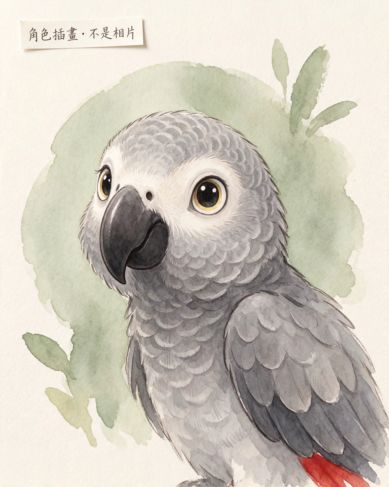
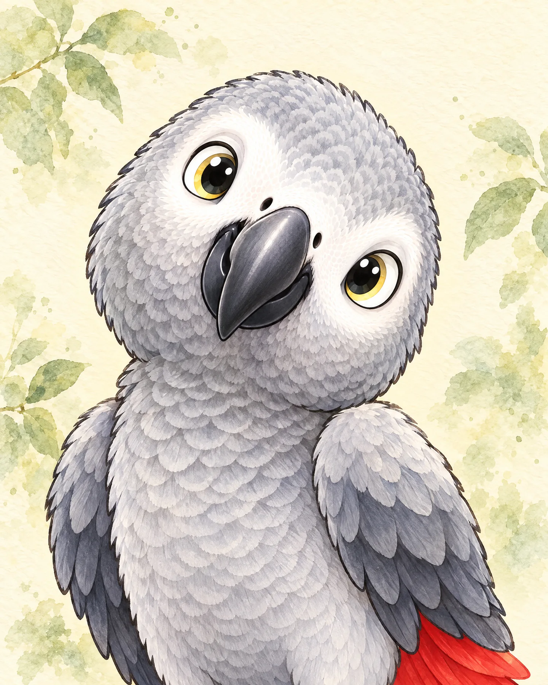
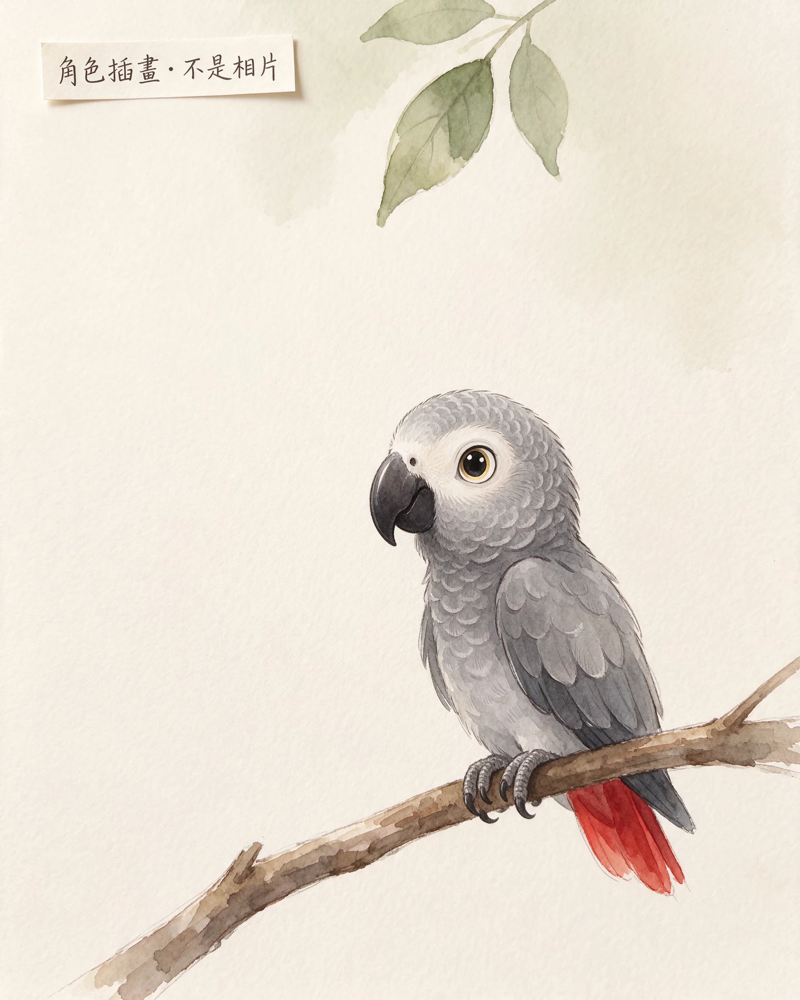
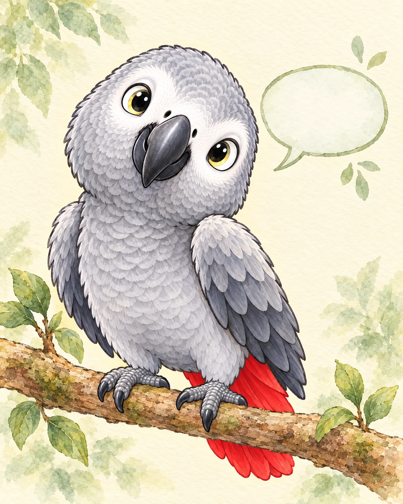
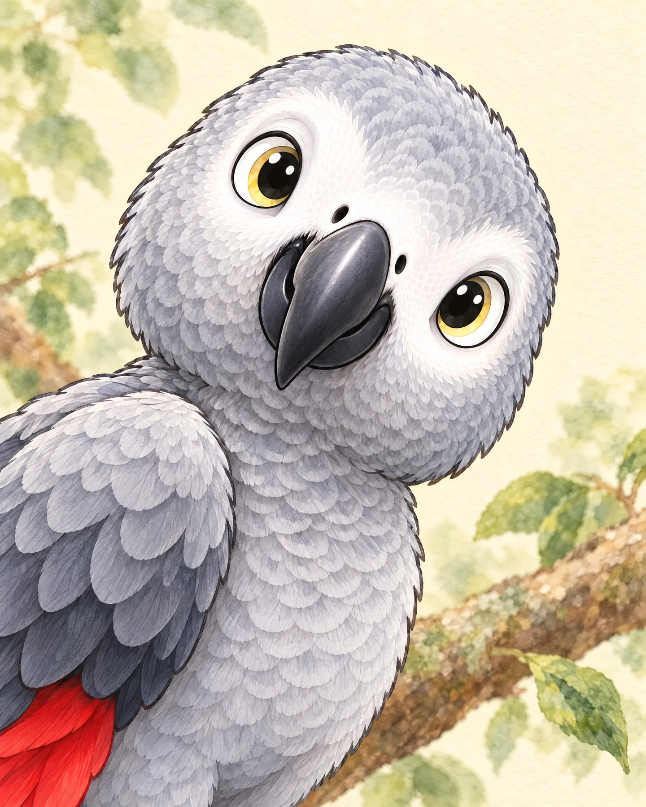
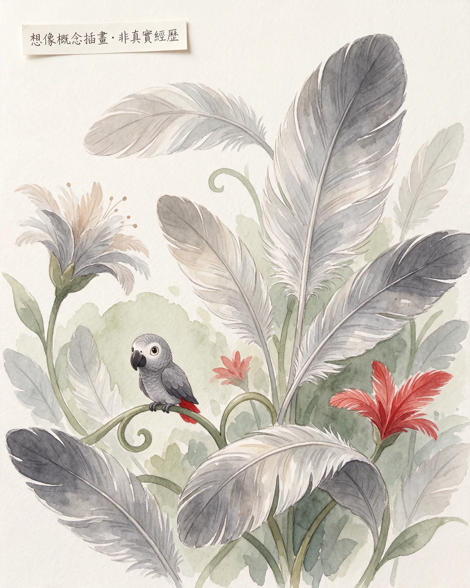
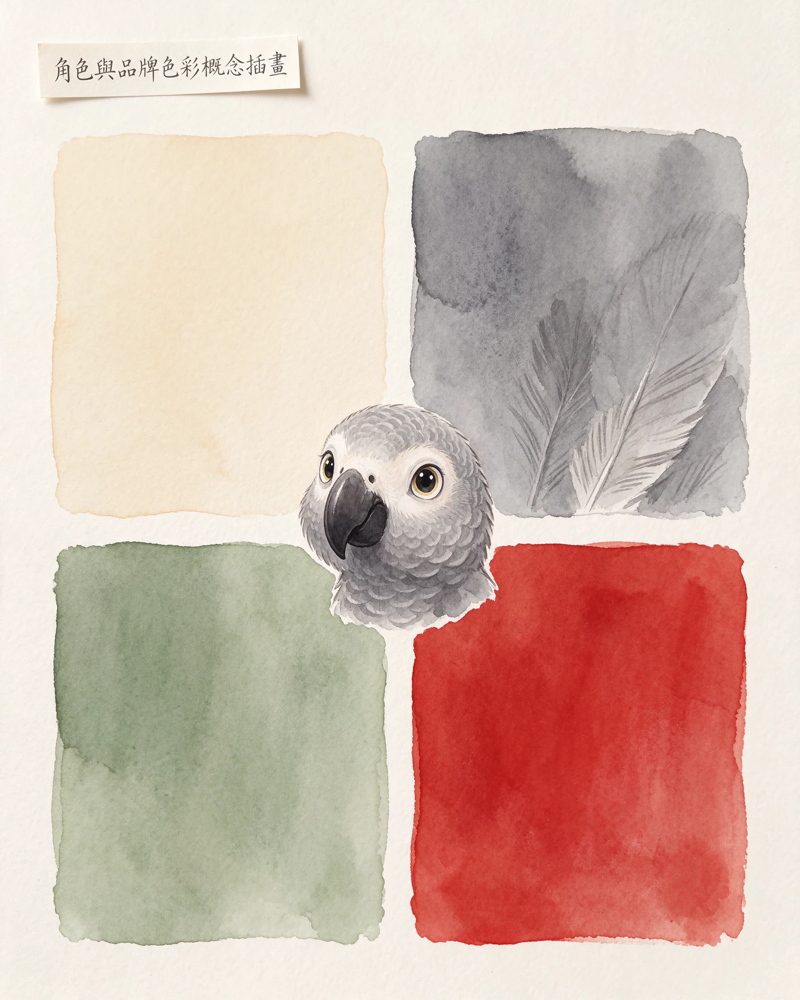
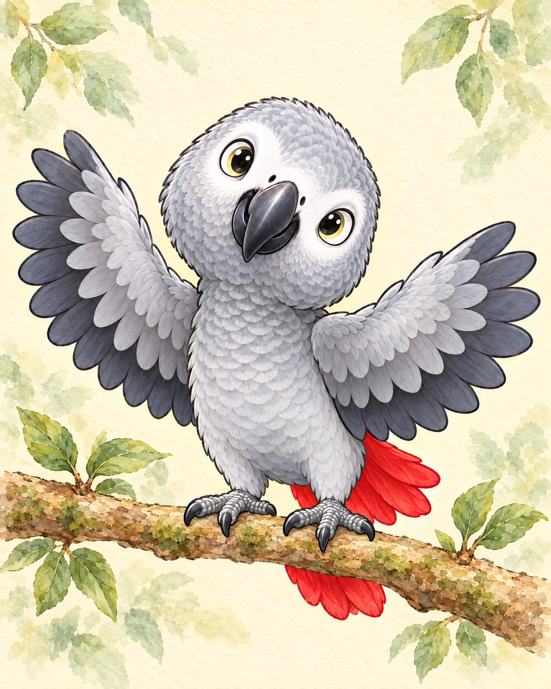

菠蘿真實日常
只記錄主人提供、已確認的真實相片、短片與生活片段。
A LITTLE NOTEBOOK
沒有真實素材時，就先留白；不替菠蘿編造習慣、對白或生活故事。
只記錄主人提供、已確認的真實相片、短片與生活片段。
水彩角色、香港城市靈感與想像場景；每篇都會註明是插畫。
分享前先核對可靠資料；涉及健康問題，交由鳥類獸醫判斷。
THE FIRST NINE

角色插畫小天地的第一聲招呼

角色插畫灰羽、淺色面部與紅尾羽

角色插畫留一個位置給下一張場景靈感
想像中的場景，不是生活紀錄

角色插畫真實日常、插畫，還是鸚鵡筆記？

角色插畫角色插畫細節，不是真實特寫

概念插畫一次插畫小旅行

品牌視覺米白、羽毛灰、鼠尾草綠與紅尾羽

角色插畫真實紀錄與想像場景，分開標明
A SMALL PROMISE
角色圖像是插畫，不會包裝成菠蘿的真實照片或經歷。現時只確認菠蘿的名字、品種和角色外觀；其他真實生活資料，等主人提供後才會寫進來。
Instagram 帳戶名稱與連結尚待確認，確定後再補上；本頁已公開上線。